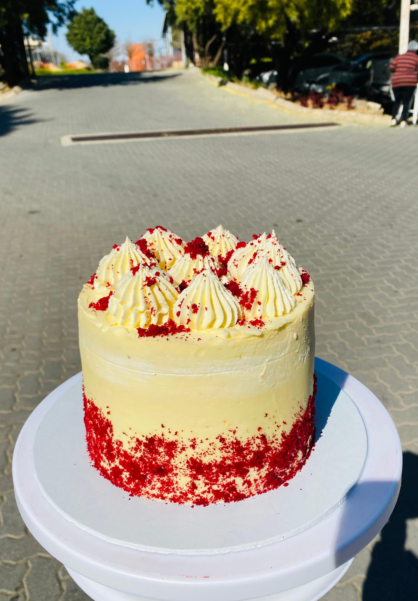

Private Chef
Luxury dining experiences at home
Chef Nat’s Culinary Services was built from a passion for creating food that brings people together. What started as a love for cooking has grown into a multi-service culinary brand offering private chef experiences, catering, baking, and street food through The Bite Joint.
Every dish is rooted in creativity, discipline, and a commitment to quality. Whether it’s a luxury dining experience or a simple street food meal, the focus remains the same — flavour, presentation, and experience.
Food should feel intentional. Every plate should tell a story. At Chef Nat’s Culinary Services, the goal is to create food experiences that are memorable, not just meals that are consumed.
From fine dining to street food, every service is built with the same standard: quality ingredients, bold flavour, and attention to detail.
Luxury dining experiences at home

Events, weddings & corporate functions

Celebration cakes & desserts

Bold street food with attitude
The vision is to build a culinary brand that moves seamlessly between luxury dining, event catering, artisan baking, and street food culture — all under one identity.
Chef Nat’s Culinary Services is not just about food. It’s about creating experiences that scale across different audiences while maintaining one standard: excellence.
Whether it’s a private dinner, an event, or a custom order — every experience starts with a conversation.